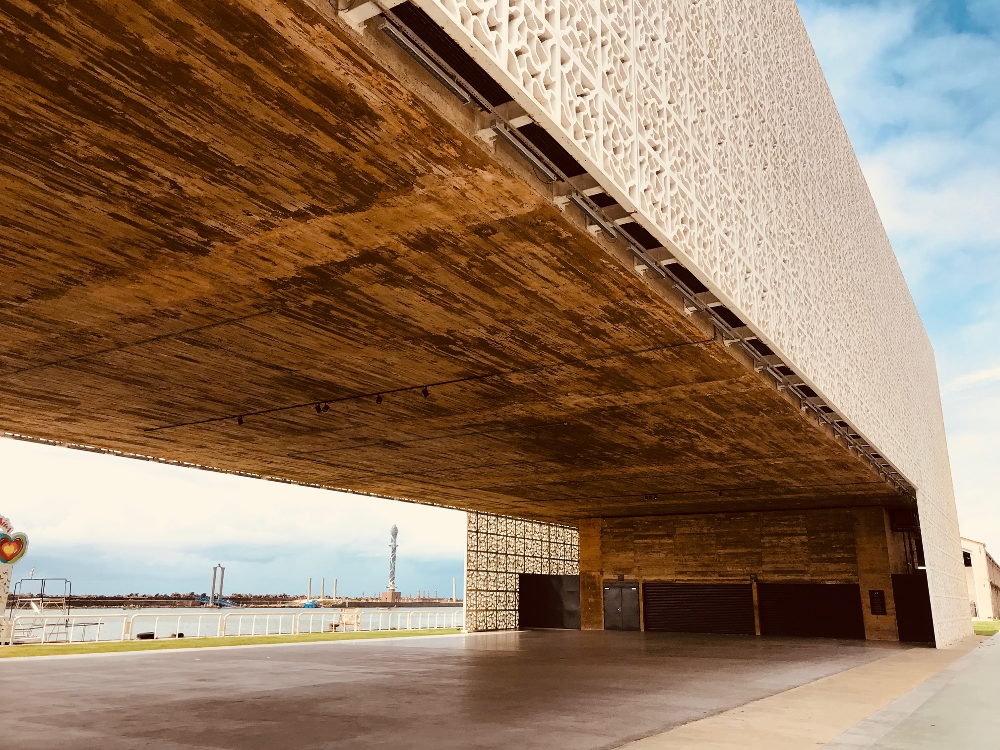

Museus e Galerias: Arte e Conhecimento
Museu Cais do Sertão
Um dos mais modernos museus do Brasil, com experiências interativas sobre a cultura e identidade nordestina, especialmente a obra de Luiz Gonzaga.
Paço do Frevo

Dedicado ao frevo, patrimônio imaterial da humanidade, com exposições, aulas e apresentações culturais.
Eventos e Festivais: O Calendário Cultural
Carnaval do Recife

Frevo, maracatu e blocos tradicionais tomam conta das ruas do Recife Antigo em uma celebração única.
Rec’n'Play

Festival de inovação, tecnologia e cultura que transforma o Recife Antigo em um grande laboratório criativo.
Programação Cultural (Fictícia)
| Evento | Data | Local |
|---|---|---|
| Festival de Arte Urbana | 12/06/2025 | Marco Zero |
| Mostra de Artesanato Pernambucano | 20/07/2025 | Armazém 14 |
| Noite do Frevo | 05/08/2025 | Paço do Frevo |
Artesanato Local: Lembranças de Pernambuco
Feira de Artesanato

A feira reúne artesãos locais com peças exclusivas: cerâmicas, rendas, bonecos, quadros e esculturas.
Artesãos em Destaque
- Maria das Rendas Renda renascença
- Seu Joaquim do Barro Esculturas em barro
- Atelier Cores do Recife Azulejos pintados à mão
- Dona Celeste Bonecas artesanais
🔗 Saiba mais em: cultura e eventos